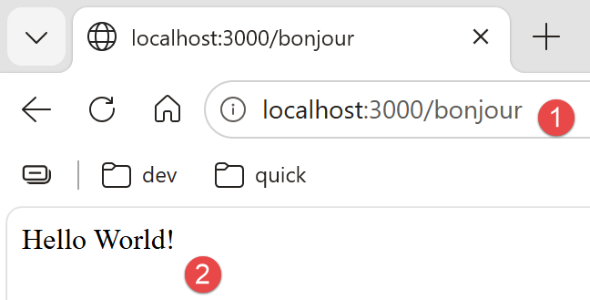

3. Chapitre 2 - Introduction à [NestJS]
3.1. Sources
Ce chapitre prend appui sur les sources suivantes :
- le site officiel de [NestJS] : nestjs.com et sa documentation docs.nestjs.com ;
- le dépôt GitHub du framework : github.com/nestjs/nest.
3.2. La place de [NestJS] dans une application web
[NestJS] est un framework Node.js écrit en TypeScript, destiné à construire le côté serveur d’une application web - le plus souvent une API REST (JSON). Il ne réinvente pas la gestion du protocole HTTP lui-même : par défaut, il s’appuie sur Express, un framework Node.js plus rudimentaire, chargé de recevoir les requêtes HTTP brutes et d’y répondre. [NestJS] vient se poser par-dessus, en apportant une organisation du code que ni Node.js ni Express n’imposent par eux-mêmes : découpage en modules, contrôleurs et services, injection de dépendances, décorateurs…
Son architecture est fortement inspirée d’[Angular] (décorateurs, modules, injection de dépendances) - une parenté qui va nous rendre bien des services au chapitre 4, quand on retrouvera exactement les mêmes idées côté client.
[NestJS] est d’abord pensé pour produire des réponses JSON : par défaut, ce qu’une méthode de contrôleur retourne est automatiquement converti en JSON et envoyé au client, sans configuration particulière.
3.3. Le modèle de développement de [NestJS]
Trois notions structurent une application [NestJS] :
- les modules (décorateur @[Module]) : un module regroupe un ensemble de fonctionnalités liées entre elles - il déclare quels contrôleurs et quels services lui appartiennent, de quels autres modules il a besoin, et ce qu’il met à disposition des autres. Une application [NestJS] démarre toujours à partir d’un module racine, [AppModule], qui assemble tous les autres modules du projet ;
- les contrôleurs (décorateur @[Controller]) : un contrôleur est la porte d’entrée de l’application - une classe dont chaque méthode reçoit les requêtes HTTP correspondant à une URL précise, et renvoie une réponse au client ;
- les providers (décorateur @[Injectable]) : un provider est une classe ordinaire, généralement chargée de la logique métier ou de l’accès aux données, que [NestJS] sait créer et fournir automatiquement (l’« injecter ») à tout contrôleur ou service qui en a besoin.
Concrètement, une classe qui a besoin d’un provider le déclare simplement comme paramètre de son constructeur - [NestJS] crée l’instance nécessaire et la transmet automatiquement, sans qu’on ait jamais à écrire new soi-même : c’est ce qu’on appelle l’injection de dépendances par constructeur, la pratique quasi systématique en NestJS.
3.4. Un premier exemple : le mini-projet « bonjour »
Pour fixer ces trois notions, voici un tout petit projet [NestJS], indépendant de l’étude de cas (une seule route /bonjour), qu’on pourrait créer avec (tapez ces commandes dans un dossier vide que vous aurez ouvert dans VSCode [File/Open Folder]. Ces commandes créent un dossier [hello-nest] ) :

Cette commande génère un projet dont voici les fichiers essentiels : [src/main.ts], src/app.module.ts, src/app.controller.ts, src/app.service.ts. Ces quatre fichiers illustrent, à eux seuls, l’architecture d’une application [NestJS] : un point d’entrée ([main.ts]), un module racine (app.module.ts), un contrôleur (app.controller.ts) et un service (app.service.ts).
3.4.1. Le service
// src/app.service.ts
import { Injectable } from '@nestjs/common';
@Injectable()
export class AppService {
getHello(): string {
return 'Hello World!';
}
}
- ligne 2 : on importe explicitement chaque élément utilisé, ici [Injectable] depuis [@nestjs/common], le module qui rassemble la plupart des décorateurs et classes utilitaires de [NestJS] ;
- ligne 4 : un décorateur est une annotation placée juste au-dessus d’une classe, d’une méthode ou d’un paramètre TypeScript (précédée du symbole @), qui modifie ou enrichit son comportement sans toucher à son code - le mécanisme sur lequel repose la quasi-totalité du vocabulaire NestJS. @[Injectable]() marque cette classe comme un provider : [NestJS] saura la créer lui-même et la fournir automatiquement à toute autre classe qui la demande dans son constructeur, sans qu’on écrive jamais new [AppService]() ;
- ligne 6 : : string déclare le type de la valeur renvoyée - une particularité de TypeScript, absente en JavaScript.
3.4.2. Le contrôleur
// src/app.controller.ts
import { Controller, Get } from '@nestjs/common';
import { AppService } from './app.service.js';
@Controller()
export class AppController {
constructor(private readonly appService: AppService) { }
@Get('bonjour')
getHello(): string {
return this.appService.getHello();
}
}
- ligne 5 : @Controller() décore la classe qui suit pour en faire un contrôleur : NestJS lui enverra les requêtes HTTP correspondant à ses routes. L’argument entre parenthèses est un préfixe optionnel, ajouté devant toutes les routes de la classe - ici il est vide : la route bonjour répond donc directement à /bonjour ;
- ligne 7 : le constructeur déclare un paramètre appService de type [AppService], précédé du modificateur TypeScript private readonly qui, en une seule ligne, le déclare ET l’enregistre comme propriété de l’instance (this.appService). [NestJS] constate que le contrôleur a besoin d’un [AppService], en crée une instance (une seule, partagée par toute l’application) et la fournit automatiquement ici : c’est l’injection de dépendances par constructeur annoncée plus haut ;
- ligne 9 : [@Get]('bonjour') associe la méthode qui suit à la route HTTP GET /bonjour : c’est ce décorateur qui rend l’action accessible à l’adresse testable http://localhost:3000/bonjour une fois le serveur démarré. D’autres décorateurs jouent le même rôle pour les autres verbes HTTP : @[Post](), @Put(), @Delete(), @Patch() (nous utiliserons @[Post]() dans l’étude de cas, pour /ajouterRv et /supprimerRv). A noter, que ligne 10, le nom de la méthode [getHello] ne joue aucun rôle. Ce peut être n’importe quel nom ;
- ligne 11 : le contrôleur délègue le travail au service injecté plutôt que de coder la réponse lui-même : il reste une simple couche de routage, la logique métier vit dans le service - un principe que l’on retrouvera, à plus grande échelle, dans l’étude de cas du chapitre 3.
3.4.3. Le module
// src/app.module.ts
import { Module } from '@nestjs/common';
import { AppController } from './app.controller.js';
import { AppService } from './app.service.js';
@Module({
imports: [],
controllers: [AppController],
providers: [AppService],
})
export class AppModule {}
- ligne 6 : @[Module]({...}) décore la classe qui suit pour en faire un module : il regroupe une partie cohérente de l’application et déclare, dans l’objet passé en argument, ce qui la compose. Quatre propriétés sont possibles : controllers (les contrôleurs que ce module expose), providers (les services que ce module fournit, disponibles pour l’injection à l’intérieur du module), imports (les autres modules dont celui-ci dépend) et exports (les providers que ce module rend disponibles aux modules qui l’importent) ;
- sans la ligne controllers: [AppController], [NestJS] ignorerait ce contrôleur et ses routes ne répondraient à aucune requête ; sans providers: [AppService], l’injection de dépendances du contrôleur échouerait au démarrage.
3.4.4. Exécution
Avec VSCode, dans un terminal lancé à la racine du dossier [hello-nest], tapez la commande suivante :
En ouvrant http://localhost:3000/bonjour dans un navigateur on obtient la réponse suivante :

3.5. Les providers et l’injection de dépendances
Une classe annotée @[Injectable]() est un provider : [NestJS] sait l’instancier et l’injecter automatiquement partout où elle est demandée dans un constructeur, à condition qu’elle figure dans le tableau providers d’un module. Par défaut, un provider [NestJS] est un singleton : une seule instance en est créée au démarrage de l’application, et cette même instance est partagée par tous les composants qui en ont besoin - un point important pour comprendre le rôle du service [ApplicationModelService] de l’étude de cas (chapitre 3), qui met en cache des données au démarrage du serveur.
3.6. Les autres décorateurs qu’on retrouvera dans l’étude de cas
Décorateur | Rôle |
associe une méthode de contrôleur à une route HTTP | |
récupère un segment variable de l’URL, ex: /getMedecinById/:id | |
récupère le corps JSON d’une requête POST, désérialisé dans une classe | |
déclare un provider (service, DAO…) | |
déclare un module, assemblage de contrôleurs et de providers |
Ces décorateurs seront réexpliqués, un par un, à l’endroit précis où ils apparaissent dans le code du serveur [RdvMedecins] (chapitre 4).